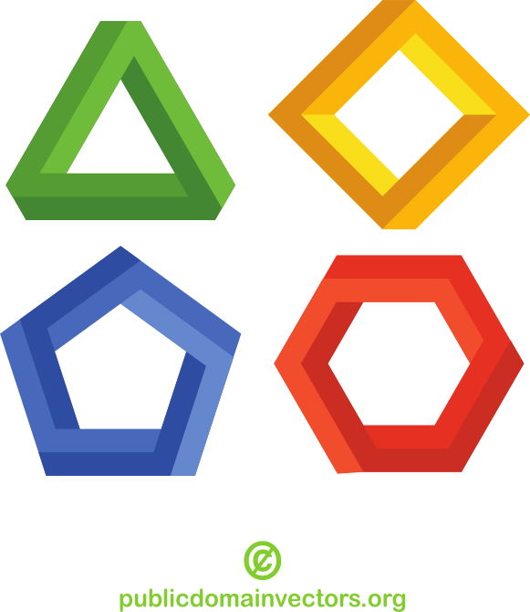
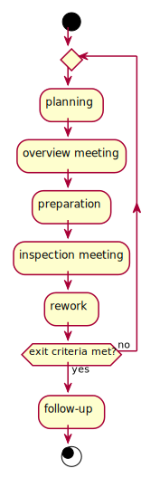
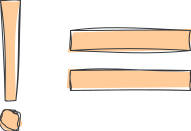
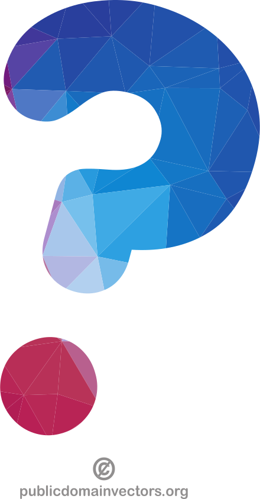
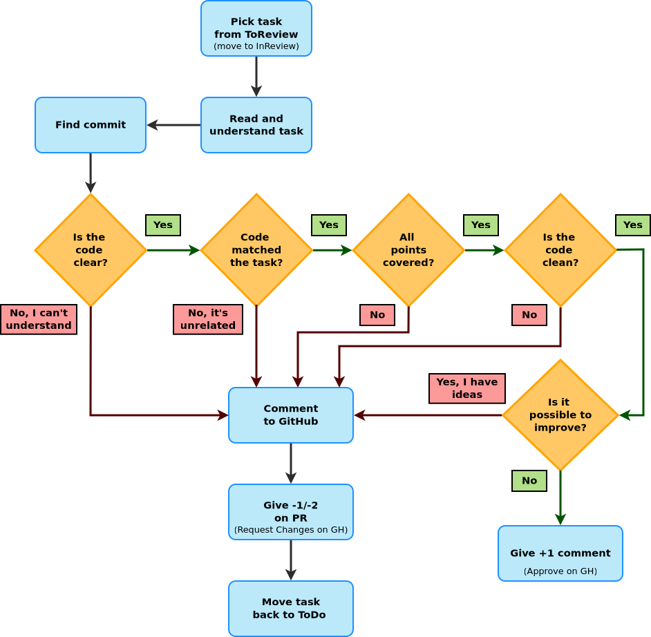
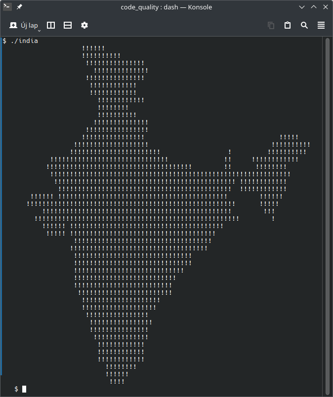
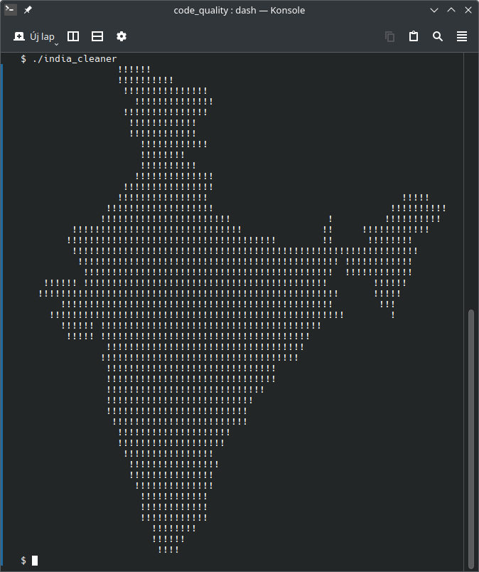

code review
Gergő Pintér, PhD
gergo.pinter@uni-corvinus.hu
V model [1]
- each phase has output and a review process
- errors are found at early stage
- decreases the risk of failure
- testing is done in a hierarchical perspective

{kind=link}
requirement analysis review

- can be discussed / reviewed
- even with a customer representative
architecture review


code review
def query_progress(user_id:int) -> float:
# establish connection
con= sqlite3.connect("data.db")
# build query
progress_query = f"""
SELECT
lesson / 50.0 AS progress
FROM activity
WHERE
user_id = {user_id} AND
result = 'success'
ORDER BY
lesson DESC
LIMIT 1
;
"""
# execute query
res =con.execute(progress_query)
progress=res.fetchone()[0]
return progress- does not respect style guide
- does 3 things
- establish DB connection
- build query
- execute query
- contains separation comments
- hard coded divisor
- magic number
every work product can and should be reviewed
review types by formality
- informal
- walkthrough
- technical
- inspection

informal
- asking a colleague to have a look at the code
- they express their opinion and that’s all
- no documentation
- no process
- pair programming is also a kind of constant informal review
walkthrough
- not a formal process / review
- led by the author(s)
- the author(s) guide the participants through the work product to achieve a common understanding and to gather feedback
- useful for higher level documents like requirement specification
- e.g., risk storming, sprint review
source: What is Walkthrough in software testing? [2]
technical
- less formal review
- led by the trained moderator or a technical expert
- often performed as a peer review without management participation
- issues are found by experts (e.g., architects, designers)
- technical reviews can vary from quite informal to very formal
source: What is Technical review in software testing? [3]
(Fagan) inspection [4]
- process phases
-
- planning: the inspection is planned by the moderator
-
- overview meeting: the author describes the background of the WP
-
- preparation: each inspector examines the work product to identify possible defects
-
- inspection meeting: reader reads through the work product, part by part and the inspectors point out the defects
-
- rework: the author makes changes to the work product according to the action plans from the inspection meeting
-
- follow-up: the changes are checked to make sure everything is correct
- roles
-
- author: created the work product being inspected
-
- moderator: the leader of the inspection, who plans and coordinates it
-
- reader: reads through the documents, while the other inspectors then point out defects
-
- recorder: documents the defects that are found during the inspection
-
- inspector: examines the work product to identify possible defects

review types by formality – summary
| type | formality | led by | effort | documentation |
|---|---|---|---|---|
| informal | not formal | noone | minimal | undocumented |
| walkthrough | not formal1 | authors | very low | normal, fault-finding |
| technical | less formal | trained moderator, not the author | moderate | more detailed |
| inspection | most formal | trained moderator | high | thorough; based on standards, checklists |
code review – author’s perspective
- be humble
- open to feedback
- the goal is to deliver higher quality code, not about arguing who
was right
- you and the reviewer are in the same side
- you and the reviewer are not only talking about the code,
- you are exchanging best practices and experiences
- you can learn from the review
based on: Code Review Guidelines for Humans [5]
you are not your code


the subject of the code review is not you, but your code
based on: Code Review Guidelines for Humans [5]
code review – reviewer’s perspective
- pay attention to the way you are formulating your feedback
- phrasing is crucial for your feedback to be accepted
- you and the author are in the same side
- the goal is to deliver higher quality code, not about arguing who was right
source: Code Review Guidelines for Humans [5]
use I-messages
formulate your feedback as expressing your personal thoughts
- I suggest
- I think
- I would
- I believe
- it’s hard for me to
- for me, it seems like
it’s hard to argue against personal feelings since they are subjective
- You-messages sound like an absolute statement
- which will lead to a defensive stance
- the author would argue with the reviewer instead of thinking about a change
- so the author will be less open for the feedback
source: Code Review Guidelines for Humans [5]
talk about the code, not the coder
- wrong
- you hard-coded the total number of lessons into the query, which is wrong
- right
- the total number of lessons is hard-coded into the query, which may raise issues later
based on: Code Review Guidelines for Humans [5]
ask questions
- asking questions feels less like a criticism as the author can
answer the question
- it can trigger a thought process which can lead to accepting the feedback
- or the author can come up with a better solution
- by asking questions you can reveal the intention behind a certain
design decision
- there may be a good reason for it

source: Code Review Guidelines for Humans [5]
refer to the author’s behavior, not their traits
- wrong
- You are sloppy when it comes to following the style guide.
- Can’t you just configure your IDE properly?
- right
- I believe that you should pay more attention to the style guide.
- Try to enable the auto-formatting in your IDE.
- usually it’s not required to talk about the author at all in a code review
- use I-messages, talk about the code or ask questions
based on: Code Review Guidelines for Humans [5]
OIR-rule of giving feedback
- Observation
- Describe your observations in an objective and neutral way. Refer to the behavior if you have to talk about the author. Using an I-message is often useful here.
- e.g., “This method has 100 lines.”
- Impact
- Explain the impact that the observation has on you. Use I-messages.
- e.g., “This makes it hard for me to grasp the essential logic of this method.”
- Request
- Use an I-message to express your wish or proposal.
- e.g., “I suggest extracting the low-level-details into subroutines and give them expressive names.”
source: Code Review Guidelines for Humans [5]
three filters for feedback
always ask yourself, if your feedback is true, necessary and kind
(from April Wensel [6] via [5])
- is it true?
- avoid statements assuming an absolute truth
- avoid the words “right”, “wrong”, “never”, “always” and “should”
- refer to your opinion instead
- is it necessary?
- does the
demandedrequested change make the reviewed code better
- does the
- it it kind?
source: Code Review Guidelines for Humans [5]
praise
- don’t forget to express your appreciation if you have reviewed good code
- praising doesn’t hurt you but will motivate the author
- however, be specific and separate the prasie from the criticism
based on: Code Review Guidelines for Humans [5]
looks good to me
- it’s okay to say: “Everything is good!”
- no code change request is a valid outcome of a code review
- you don’t have to find something in the code
- a code can be not just okay, but worth to learn from it
- however, when a reviewer too often says LGTM, it becomes fishy
- especially if the review code turns out to be problematic later regardless the positive feedback
a review process

- is it understandable (clear)
- is it clean (no code smells)
- does it match the task?
- does it fulfill the task?
- every DoD point covered?
- is it possible to improve?
how can you tell if the code matches the task?


#include <stdio.h>
main()
{
int a,b,c;
int count = 1;
for (b=c=10;a="- FIGURE?, UMKC,XYZHello Folks,\
TFy!QJu ROo TNn(ROo)SLq SLq ULo+\
UHs UJq TNn*RPn/QPbEWS_JSWQAIJO^\
NBELPeHBFHT}TnALVlBLOFAkHFOuFETp\
HCStHAUFAgcEAelclcn^r^r\\tZvYxXy\
T|S~Pn SPm SOn TNn ULo0ULo#ULo-W\
Hq!WFs XDt!" [b+++21]; )
for(; a-- > 64 ; )
putchar ( ++c=='Z' ? c = c/ 9:33^b&1);
return 0;
}
#include "stdio.h"
int main (void) {
int a=10, b=0, c=10;
char* bits ="TFy!QJu ROo TNn(ROo)SLq SLq ULo+UHs UJq TNn*R\
Pn/QPbEWS_JSWQAIJO^NBELPeHBFHT}TnALVlBLOFAkHFOuFETpHCStHAU\
FAgcEAelclcn^r^r\\tZvYxXyT|S~Pn SPm SOn TNn ULo0ULo#ULo-WH\
q!WFs XDt!";
a = bits[b];
while (a != 0) {
a = bits[b];
b++;
while (a > 64) {
a--;
if (++c == 'Z') {
c /= 9;
putchar(c);
} else {
putchar(33 ^ (b & 0x01));
}
}
}
return 0;
}a less
obfuscated version (with explanation)
by bta
CC BY-SA 2.5

references
Sometimes it can be somewhat formal.↩︎